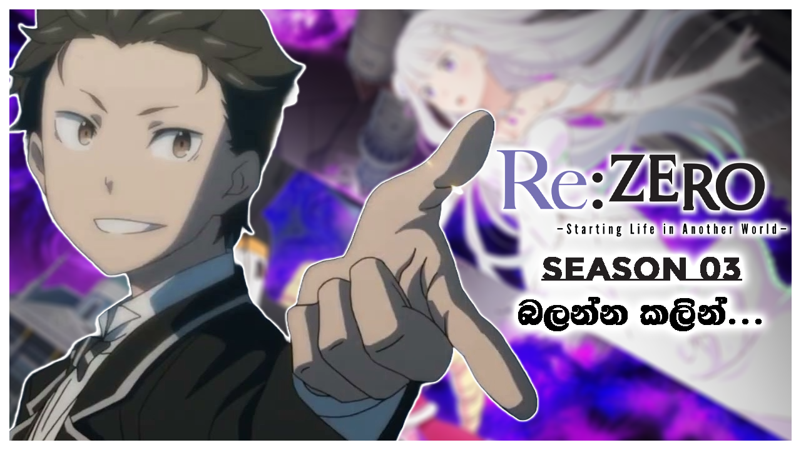
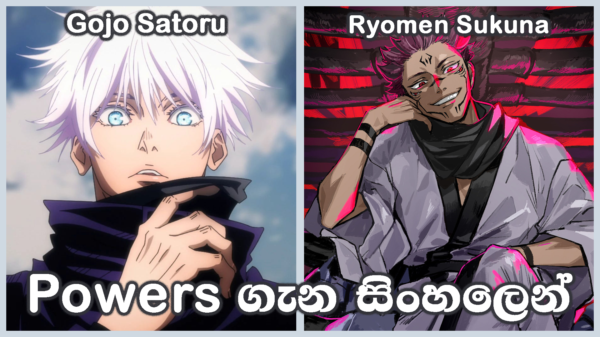
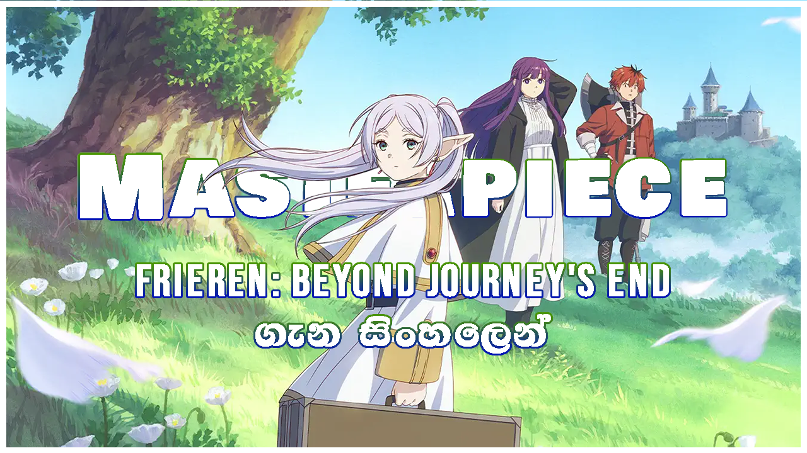
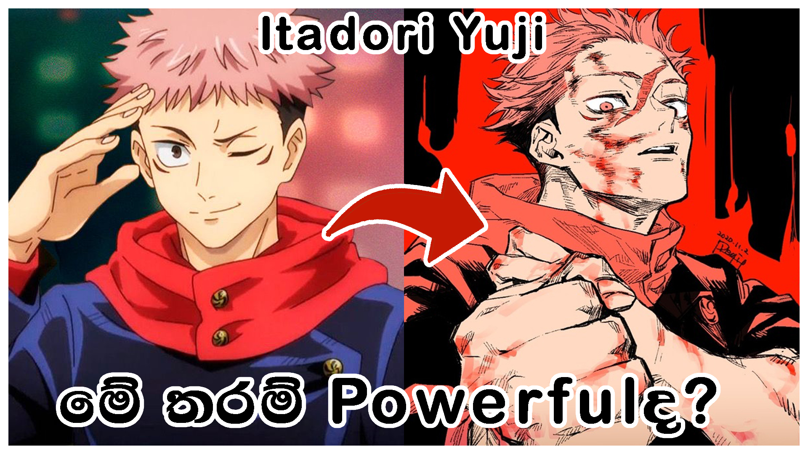
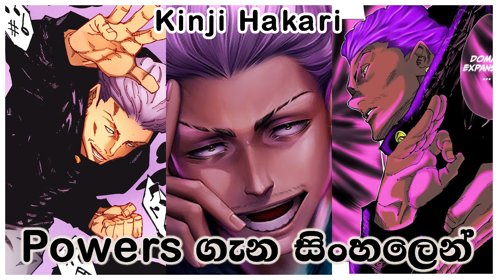

Explore our complete library of anime analysis, reviews, seasonal guidelines, and weekly podcast shows.
In this video, we explore the top 6 anime movies with Sinhala subtitles that you shouldn't miss! We also discuss their plot, characters, and why they're worth watching. Also, we share our personal recommendations for each film.
Subscribe on YouTube
41:10A Sinhala review of Re:Zero Season 03, analyzing the new episodes and their impact on the overall narrative.
Watch Now
16:30A Sinhala analysis of the unique abilities and powers of Gojo Satoru and Sukuna in Jujutsu Kaisen.
Watch NowA Sinhala guide to the various career opportunities available in the anime industry.
Watch NowIn this podcast episode, we discuss the rise of toxic behavior in the anime community and other related topics.
Watch Now
08:35A review of an beautiful anime series called Sousou no Frieren.
Watch Now
16:30Exploring the unique abilities and powers of Itadori Yuji in the Jujutsu Kaisen anime.
Watch NowDiscovering the perfect anime for you based on your preferences and viewing history.
Watch NowDiscussing the questions you asked from us, with insights and opinions.
Watch Now
18:40Studying the complexities of Kinji Hakari's domain expansion and his impact on the narrative.
Watch Now